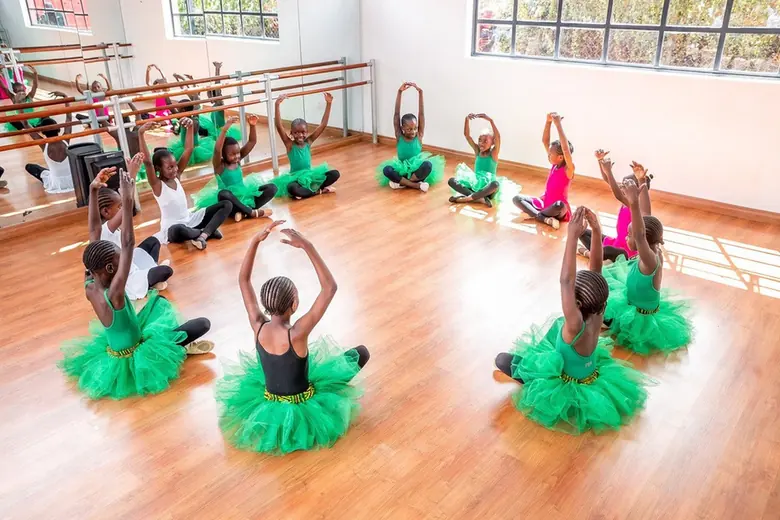
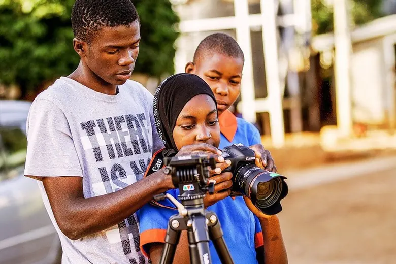
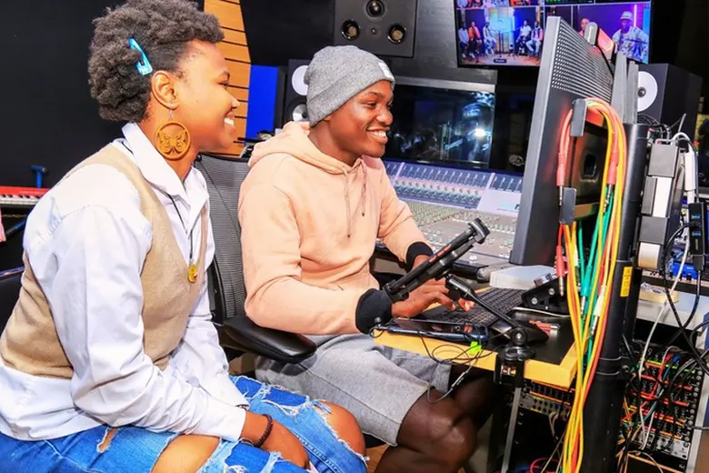
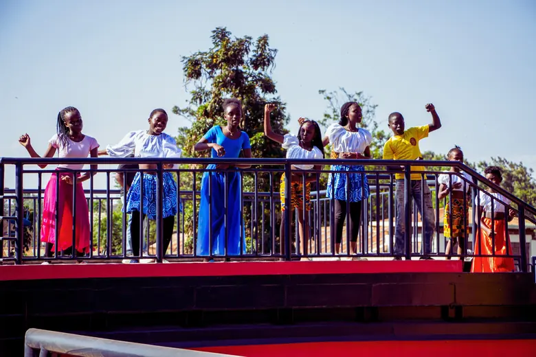
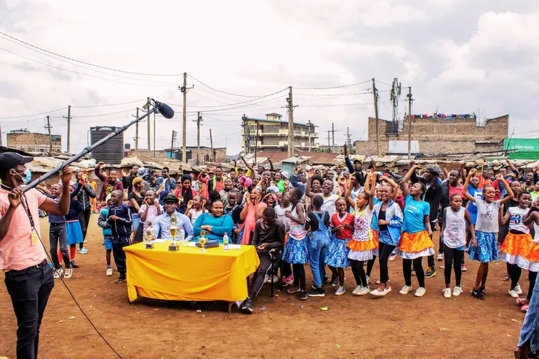

Kibera · Nairobi · Kenya
Where creativity opens doors to new possibilities.
Anno's One Fine Day Art Centre is a creative space in Kibera where children and young people explore, dream, create and imagine new possibilities for their lives.
Who we are
Anno's One Fine Day is a non-profit organisation in Kenya using the power of creative arts and education to unlock potential, build confidence and create pathways to opportunity for children and young people from underserved communities in Nairobi.
Based in Kibera, one of Nairobi's most vibrant and densely populated communities, our Art Centre provides a safe, inclusive and inspiring space where young people can explore, dream, create, learn and imagine new possibilities for their lives.
The Centre was completed in January 2024 in cooperation with the German Federal Ministry for Economic Cooperation and Development (BMZ) and the German Development Cooperation (GIZ). Sixteen teachers, all Kenyan nationals, instruct here regularly.
“We believe that every child has a voice, and we create an enabling environment where they can express it in their own unique way. We ignite artistic dreams; and these dreams, our children's dreams, are our nation's future.”
Krysteen Savane, Founder and DirectorWhat we teach
Our creative education programme engages more than 500 children and young people every week across eight artistic disciplines.
Through these disciplines young people do more than learn artistic skills. They develop self-confidence, discipline, teamwork, communication, critical thinking, resilience and self-expression — skills that shape their education, relationships, livelihoods and futures.
Alongside the arts we run regular workshops on health, hygiene, sexual and reproductive health, mental health and environmental awareness — subjects often overlooked but vital for young adults.
Inside the centre
A place to explore. A space to dream. A platform to grow.









Latest from Instagram
Classes, rehearsals and showcases as they happen.
More at @annosonefinedayartcentrekibera.
Make an impact today
When you invest in arts education, you are investing in people, potential and possibility.
In the news
Recent coverage of the Centre and our founder.
Krysteen Savane knighted with France's Order of Arts and Letters
Our founder and director received the insignia of Chevalier de l'Ordre des Arts et des Lettres from French Ambassador Arnaud Suquet, at a ceremony held at the Arts Centre in Kibera.
Read more →
She's using art to transform the lives of young people in Kibera
A profile of Krysteen Savane and the work of the Centre — and of how hard it is to sustain arts education in a low-income setting when funding stays uncertain.
Read more →Working with
Other ways to help
Volunteer
Are you passionate about working with young people and helping them discover what makes them unique? We would love to hear from you.
Get in touchPartner with us
Businesses, schools and artists can run a masterclass, sponsor a discipline or host a fundraiser. We work with partners across Kenya and abroad.
Start a conversationSpread the word
Share this page with your friends, family and followers. It helps more than you think.